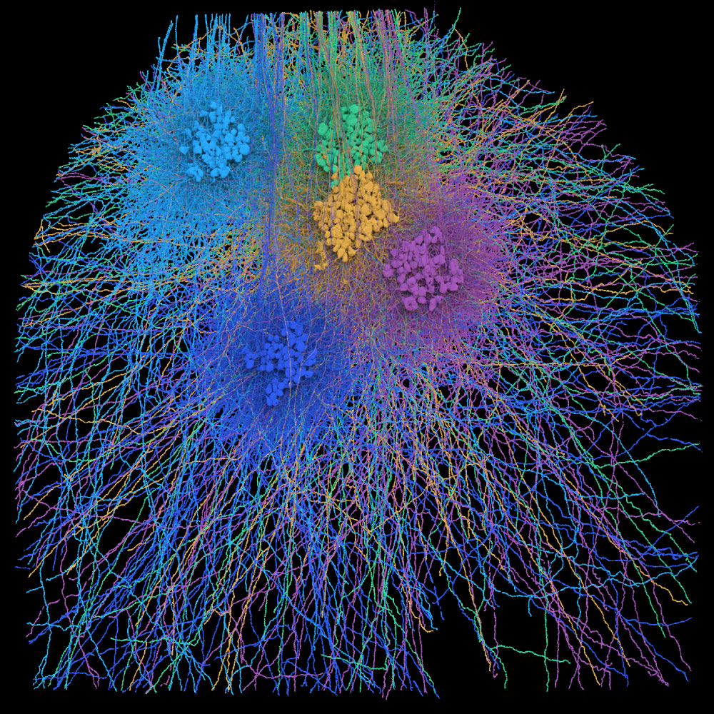

Brain mappers needed

EyeWire II
The next‑generation EyeWire, mapping thousands of neurons in the mouse retina, the light‑sensing tissue at the back of the eye where vision begins. Here you own your cell start to finish: no consensus committee, you're its first and last check.
- Location
- Mouse retina
- Approx. neurons
- ~100,000